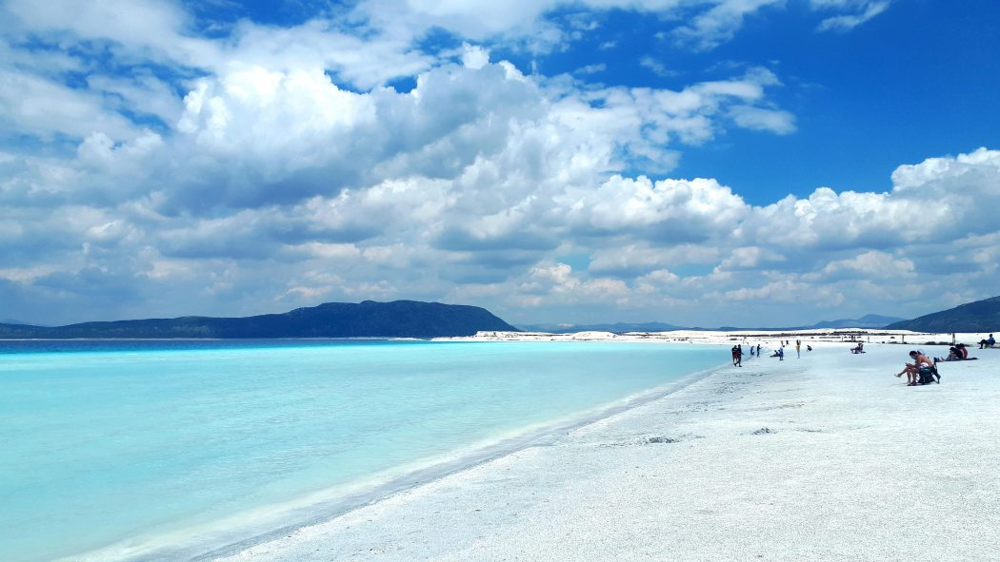
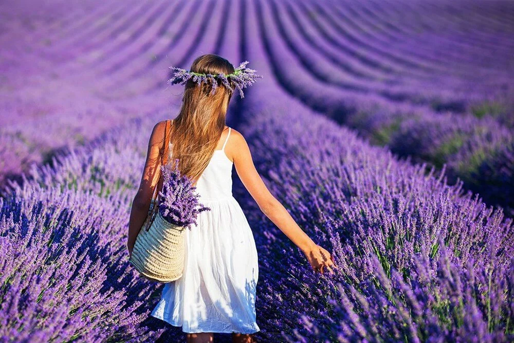

Salda Gölü, Burdur'un Yeşilova ilçesinde, ilçe merkezine 4 km uzaklıkta, ormanla kaplı tepeler, kayalık araziler ve küçük alüvyal ovalarla çevrili hafif tuzlu karstik bir göldür. Göller Yöresi içinde, dışa akışı olmayan kapalı havzalı yapıdadır. Yüzölçümü yaklaşık 44 kilometrekaredir. 184 metreye varan derinliği ile Türkiye'nin 3. en derin gölüdür. Gölde oluşan hidromanyezit minerali "biyolojik mineralizasyon" un en güzel ve güncel örneklerinden biridir. Salda gölü, 14.03.2019 tarih ve 824 sayılı Cumhurbaşkanı Kararı ile Özel Çevre Koruma Bölgesi olarak tespit ve ilan edilmiş, 15.03.2019 tarih ve 30715 sayılı Resmi Gazete’de yayımlanmıştır.
Suyunun temizliği ve turkuaz rengiyle oluşan güzel manzaranın yanı sıra, güneybatı ve güneydoğu kıyılarında yer alan küçük kumsallar alanın rekreaktif amaçlı kullanımına olanak sağlamaktadır. Salda Gölü Burdur ilinin yaklaşık 60 km batısında yer alır. Türkiye'nin en derin, en temiz, en berrak özelliklere sahip gölü olarak tanınıyor. Deniz seviyesinden yüksekliği 1140 m'dir. Göl suyunun terkibinde magnezyum, soda ve kil bulunması bazı cilt hastalıklarının tedavisinde yararlı sonuçlara sebep oluyor. Uzmanların yaptığı araştırmalara göre göl suyu sivilcelere iyi geliyor. Gölün arka kısmında kalan orman örtüsü keklik, tavşan, tilki, yaban domuzu, göl ise yaban ördeklerine ev sahipliği yapıyor. Göl içindeki suların çekilmesiyle görülmeye başlayan yedi beyaz ada bulunmaktadır.
Salda Gölü, sert su ve çok yüksek alkalin özelliğine sahip bir göldür. Trofik durum indeksine göre besin maddesince fakir, oligotrofik özelliktedir. Fazlaca düşük azot ve fosfat ürünleri ve bunun sonucunda çok düşük klorofil a yoğunluğuna sahip olması bunun göstergesidir. Salda gölü akarsular, yüzeye düşen yağış, yeraltısuları ile beslenir, buharlaşma ile su kaybeder. Gölün alan ve seviyesi yağışlara göre yıllar içimde değişir. Salda (Karakova) Dere, Doğanbaba Deresi, Köpek Deresi gibi sürekli akarsular ve Karanlık Deresi, Kuruçay, Kayadibi Deresi gibi mevsimlik akarsular Salda Gölü'ne dökülür. Son 20 yıldır, göl seviyesinde 3-4 metreyi bulan bir çekilme olmuştur. Hâlen çekilme devam etmektedir. Gölün doğusunda Yeşilova ilçesi, güneybatısında Salda, kuzeybatısında Doğanbaba ve kuzeydoğusunda Kayadibi köyleri yer almaktadır. Salda Gölü ve çevresi, 14.06.1989'da 1. derece Doğal Sit Alanı olarak tescil edilmiş ve koruma altına alınmış, daha sonra Antalya Kültür ve Tabiat Varlıkları Kurulunun 28.07.1992 tarih ve 1501 sayılı kararıyla, Salda Gölü kıyısındaki bazı mahaller, 2. derece Doğal Sit Alanı olarak tescil edilmiştir.[5] 2012 yılında mesire yeri olarak kullanılan göl çevresindeki 12 ha alan Salda Gölü Tabiat Parkı ilan edilmiştir.
Lavanta bahçeleri Keçiborlu İlçesi’ne bağlı Kuyucak Köyü’nde bulunmaktadır. Isparta İl Merkezine 50 km mesafede olan Kuyucak Köyü, Isparta Süleyman Demirel Havalimanı’na 25 km, Antalya-İstanbul Karayolu’na 10 km uzaklıktadır. Köy yüksek konumu ile Burdur Gölü manzarasının seyredilebildiği bir alandır. Kuyucak Köyü’nde 5000 dekarda yetiştirilen lavanta sıcaklık, yağış gibi mevsimsel durumlar etki etse de Temmuz ayının başında açmaya başlar. Hasat işleri ise Temmuz ayının sonundan Ağustos ayının ortalarına kadar devam eder. Kuyucak Köyü’nde yetiştirilen lavanta Türkiye üretiminin % 90'ını oluşturmaktadır. Üreticisinin yaş veya hasattan sonra kurutarak satışa sunduğu lavanta çiçekleri fabrikalarda işlenip krem, sabun, yağ, kolonya gibi ürünlere dönüşerek tüketicilere ulaşmaktadır. Lavanta bitkisi ve lavanta bazlı ürünler sinirleri yatıştırmak, uyku bozukluklarını tedavi etmek, romatizma ve kas ağrılarını hafifletmek, akne tedavisi, saç köklerini güçlendirmek, ev ve giysilerden zararlı böcekleri uzak tutmak, güzel koku sağlamak gibi farklı kullanım alanlarına sahiptir. Ayrıca lavanta çayının güzel kokusu ve sakinleştirici etkisi de vardır. Lavantaların çiçek açtığı dönemde mor renkli tarlalar fotoğraf çekimi için uygun alanlardır. Bu dönemde köy ve civarında yürüyüş, bisiklet ve fotoğraf çekimi aktiviteleri yapılabilir.
Lavanta bahçeleri, büyüleyici bir güzellik sunar. Mor, morumsu mavi ve beyaz renklerle dans eden lavanta
tarlaları, gözleri büyüler. Mis gibi kokusuyla çevreye hoş bir hava katar. Bu göz alıcı bitkiler, hem
görsel bir şölen sunar hem de aromaterapi için kullanılır. Lavanta bahçeleri, huzur ve dinginlik
arayanların uğrak noktasıdır. Ziyaretçiler, lavanta kokusu eşliğinde doğanın keyfini çıkarır.
Alanya’dan lavanta bahçeleri ve Salda gölü turu lavanta kokulu köy olarak bilinen Kuyucak köyü ve
Türkiye'nin Maldivleri olarak ünlenen Salda gölüne düzenlediğimiz bir kombi doğa tur
programıdır.Alanya'ya yaklaşık 290 km uzaklıkta olan Lavanta tarlaları ile ünlü Kuyucak köyü Ispartanın
Keçiborlu ilçesine bağlıdır.Gül üretimiyle ünlü Isparta aynı zamanda Türkiyenin lavanta üretiminin %80
ni karşılamaktadır.Kuyucak köyü heryıl milyonlarca turistin ziyaret ettiği Fransa'nın Provence bölgesini
anımsatmakta daha şimdiden onbinlerce yerli yabancı ziyaretçiyi ağırlamaktadır.
Lavanta kokulu köy Kuyucakta tarlalardaki öbek öbek Lavanta çiçeklerinin harika bir doğal görsel görsel
şölenini izleyeceksiniz.Mis gibi lavanta kokularını soluklayarak ve mor lavanta öbekleri arasında
dolaşarak keyifli bir huzur hissedeceksiniz.Fotoğraf tutkunlarına nefis görüntüler sunan Mor rengin
tonlarına bürünmüş lavanta çiçekleri içerisinde dekorlarla harika fotoğraflar çekebilirsiniz. Köylü
kadınların kendi elleri ile hazırladıkları lavantalı bal,lavanta çayı,lavanta yağı,lavantalı
dondurma,lavanta yastığı, kokular, sabunlar, küçük süslemeler, bal, dondurma ve daha sayamadığımız bir
çok çeşit lavanta ürününü köylülerin açtığı tezgahlardan alabilirsiniz.
Alanya'ya yaklaşık 290 km uzaklıktaki Salda gölü Kuyucak köyüne yaklaşık 95 km dir Salda gölü beyaz
kumları ve masmavi rengiyle Maldivler’i andırır. Bu nedenle sıkça Türkiye’nin Maldivleri olarak
anılır.Salda gölü Türkiyenin en temiz suyuna sahiptir ve 184 metreye ulaşan derinliğiyle yanı zamanda
Türkiyenin en derin göllerinden biridir. Salda Gölü’nün yaklaşık 2 milyon yıl önce oluştuğu tahmin
edilmektedir.Gölün suyu az tuzlu ve yüksek alkali özelliktedir ve sıcaklığı hiç 17 dereceden aşağı
düşmemektedir. Salda gölü tabiat parkı Beyaz kum taneli kumsalı,etrafındaki çamlık ve ardıç kaplı
ormanlarını yeşili ve berrak gökyüzü mavisi rengiyle harika bir kombinasyon oluşturur.Salda gölünde
yüzebilir,kumsalın ve manzaranın tadını çıkarabilir harika fotoğraflar çekebilirsiniz.
Alanya'dan Lavata bahçeleri ve Salda gölü turumuzda ayrıca yine bir doğal güzelliğimiz olan Karacaören
gölü yanındaki gölbaşı restaurantta kahvaltı molamız vardır.Gölün harika manzarası eşliğinde
kahvaltınızı yapabilirsiniz.
Bütün doğaseverleri Alanya çıkışlı lavanta bahçeleri ve Salda gölü turuna bekliyoruz.